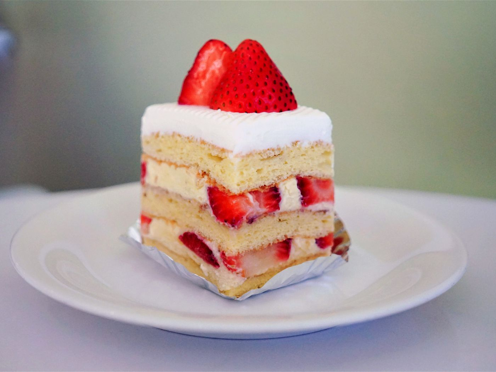

Devilish Fruitcake

Lastly on our three-course meal list to impress
someone special (though let's be honest,
the first bite will be gross) is our Devilish Fruitcake, complete with
sponge cake, whipped cream topping, and most importantly of all, our special
Devil Fruit!
Ingredients
- Cake Flour
- Baking Powder
- Salt
- Eggs
- Granulated Sugar
- Pure Vanilla Extract
- Full-Fat Yogurt
- Unsalted Butter
- Heavy Cream
- Icing Sugar
- Devil Fruit
Steps
Sponge Cake
- Preheat oven to 350 degrees F. Line bottom of two 8-inch cake pans with parchment paper.
Avoid greasing sides of pan.
- Measure and sift dry ingredients, then set aside.
- In large bowl of stand mixer or using electric hand mixer, beat the eggs and yolk, sugar,
and vanilla on medium-high speed until the triple in size, about 5 minutes.
- Using a rubber spatula, gently fold the flour into the wet
ingredients until just combined. Avoid overmixing to maintain a light and fluffy batter
and preserve the air bubbles created by whipping the eggs, ensuring an airy cake.
- In a small bowl, mix the yogurt and melted butter together.
- Fold this mixture into the batter similarly to how you folded
it with the flour. These ingredients will contribute to a moist sponge cake.
Divide the batter equally
between the two pans and place them in the oven immediately to bake.
- Bake for 20 to 25 minutes until a toothpick inserted in the middle
comes out clean and the cake is golden brown.
Once baked, remove the sponge cakes from the oven,
place them on a wire rack, and let them cool for 5 minutes.
Loosen the sides by inserting a knife between the cake and the pan.
- Invert both cake tins onto the cooling rack and remove the
parchment paper from the bottom.
Finally, allow the cakes to cool completely upside down
on the wire rack for approximately 2-3 hours. While they cool, you can
start preparing the whipped cream.
Whipped Cream
- In a large mixing bowl, use an electric mixer with the
whipping attachment to beat together the cream and sugar at high speed until
stiff peaks form. Cut the fruit into small pieces.
- Place the first cake layer on a large plate. Add a thin layer of
whipped cream on top, arrange half of the fruit, add another thin layer of
whipped cream on
top of the fruit, and then place the second layer on top.
- Spread the remaining whipped cream over the top layer and
decorate with the remaining fresh fruit. Serve immediately and store
any leftovers in the refrigerator.
Back to Index.